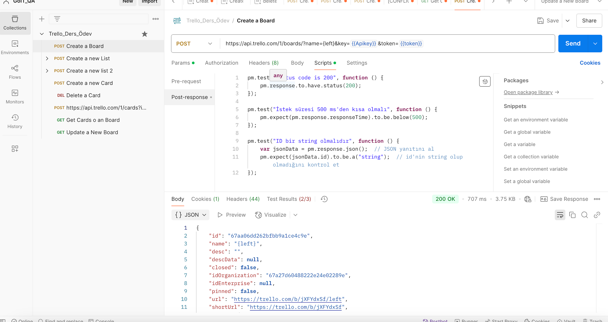

Görev 01
Bir pano oluşturun
Boards > Create a Board adımını kullanarak yeni pano oluşturma isteği.
İstek Bilgisi
Test Betiği
Bu görev için test betiği belirtilmedi.
Yanıt Kanıtı

Görev 01
Boards > Create a Board adımını kullanarak yeni pano oluşturma isteği.
Bu görev için test betiği belirtilmedi.
